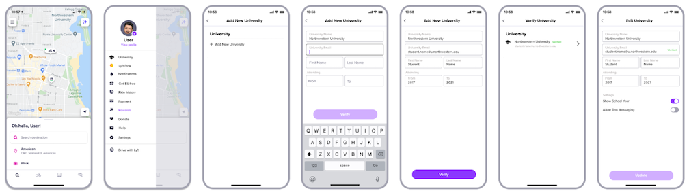
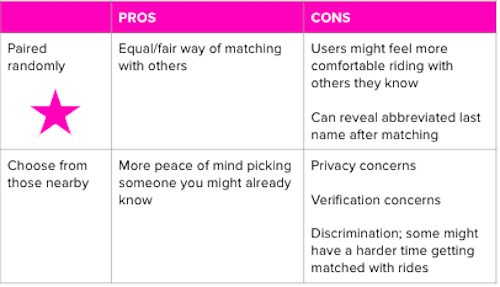
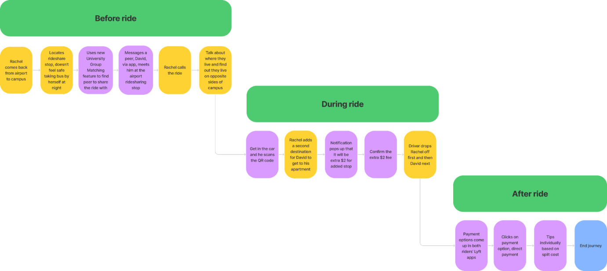

CASE x Lyft: University Group Matching

Summary
Our client was Lyft, a national rideshare company. Lyft's payment team came to CASE (an undergraduate consulting club at NU) with the question of how we might improve the ride payment experience to increase brand loyalty amongst college students. Our team of 10 (composed of Design and Marketing subgroups) collaborated over 10 weeks in Spring 2021 to address this question through 1) research, 2) analysis, and 3) product development.
We sought to understand the college student demographic, their ridesharing behaviors, and the pain points they experience during the Lyft ride process, specifically regarding payment. My role involved collaborating with my team to conduct interviews as well as develop journey maps, user personas, and product ideas.
Research Questions:
- What is the typical experience of a college student when using Lyft? What are their typical use cases?
- How might we segment the college student demographic into distinct personas/patterns of behavior?
- What are the most prominent issues that arise for college students when using Lyft?
- How might we mitigate these issues?
- College students value cheap, safe rides.
- Out-of-state college students make use of Lyft more than in-state students.
- Mass survey
- Design interview
- Consumer psychology interview
- Follow-up target audience (low-income students) interview
Process
After aligning expectations with our client, we started with research. We decided against focus groups despite their convenience, as we felt they tend to lead towards biased results. We brainstormed questions, as shown below, categorizing them into 6 sections:
After receiving client feedback, we sent out the 30-question survey that focused on payment methods and transportation options. It was completed by 675 students across 100+ different colleges in the U.S.

Our team then conducted 30 1:1 in-depth interviews. We ensured a mix of gender, socioeconomic status, frequency of rideshare use, and attendance at an in-state vs. out-of-state school.
- Our Interactive Design interviews had users test a mock Lyft interface and note their actions and frustrations. They sought to better understand:
- a) how college students currently interact with ridesharing apps, and
- b) main frustrations, especially regarding payment process
- Our Consumer Psych interviews aimed to better understand:
- a) motivational factors behind transportation selection, and
- b) brand perception among college students
Analysis
Our market segmentation was split based on 2 factors: 1. Airport Rides are the Primary Use for Out-of-State (OOS) Students
- 38.06% of out-of-state students noted airport travel as a reason for rideshare use.
- Out-of-state students use rideshare for airport travel 6x more than in-state students (6.10%).
- Within out-of-state, 30% of students with income <$150k use rideshare for airport travel, compared to 48% of students with income >$150k.
- Overall, 19.68% of students use rideshare for night rides.
- When broken down by income, we saw that 16.39% of students in the <$50k bracket use rideshare for night rides, compared to 22.43% of students in the >$150k bracket.
- In-state students take an average of 3.72 rides a month, compared to 4.34 rides a month for out-of-state students.
- This could be because out-of-state students tend to be wealthier, and/or because they have less access to personal transportation.
We observed 3 common pain points:
- Pain Point 1: Want more transparency on tipping/charging
- Research statistics:
- 64% of interviewees were unsure of when they would be charged for the ride
- 65% of interviewees mentioned wanting transparency in where their money was going
- (Lyft states that 100% of tips go to drivers, but many respondents were unaware of this)
- Pain Point 2: It’s difficult to find students to carpool with to shared destinations
- Research statistics:
- 86% of out-of-state interviewees mentioned the airport as one of their main rideshare use cases
- 90% of out-of-state interviewees mentioned being out late at night as one of their main rideshare use cases
- Everyone we interviewed said they used Venmo to split payments
- 64% of our interviewees said improving the split feature would be helpful
Using our research, I and the rest of the Design team got to brainstorming product solutions. Our insights led us to 3 different ideas: Out of the 3, we recommended our University Group Matching Feature.
Product
University Group Matching would help students reach common destinations, given that many students rideshare 1) going to and from the airport / campus, and 2) returning home late at night. The current user obstacle is a lack of streamlined process of coordinating rides with others who are heading towards the same destination. Our design argument is that this feature would connect you with other university students traveling from the same location.
University Group Matching would verify that users are indeed college students by requiring input of a university affiliation. Riders would click the “University” tab at the top of the sidebar menu, and input their name, student email, and years of study before hitting “Verify.”
I was inspired by Spotify’s Student Premium Package - Spotify requires similar information for students to use Premium at a discounted rate. Knowing that such a system existed made it easier for us to recommend it as part of our solution!
After verification, riders could click the “Edit” button to update their university should they need to (e.g. transferring to another school.)

Our team was conflicted between whether to connect riders to other students randomly or to allow them to choose.

As seen above, we decided to connect students at random because we (and our client) were concerned about issues regarding the logistics of privacy and college affiliation verification, as well as the possibility that riders may discriminate when they make their decision.
We used our research findings to develop two user personas for our University Group Matching feature:
One of the key insights from my interviews with low-income students was that everyone did not budget for transportation as highlighted with Resourceful Rachel. During a meeting, our client expressed surprise that low-income students did not budget, but I communicated our interviewees’ perspectives, explaining that they could not afford setting aside any money for rideshare which they viewed as too expensive to even consider as an option outside of a few circumstances.
Below are our final user journeys before and after implementing University Group Matching, respectively:

Looking Back
I would have hoped to have more diversity in our survey, given that a quarter of our respondents were from Northwestern University, as well as more diversity in our interviews. We reached out to survey respondents who were willing to be interviewed, and that ended up being a lot of people whom we already knew personally.In addition, we had relatively high-fidelity prototypes as shown in the mockups. In hindsight, I wondered if showing high-fidelity mockups might have made it more difficult for interviewees to comfortably provide feedback. In the future, I aim to first test lower-fidelity prototypes and iterate more.